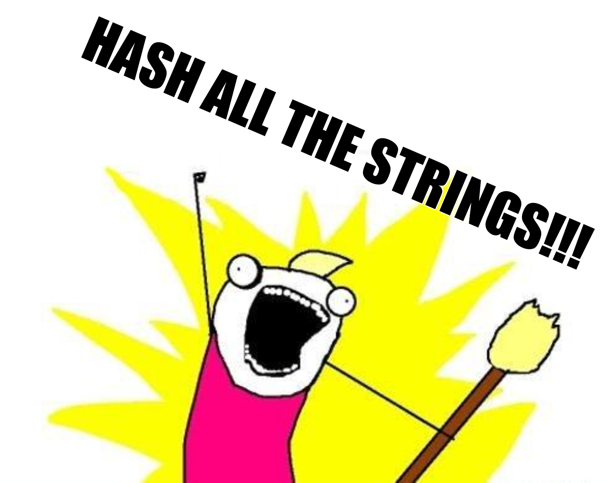

Cryptographic hash functions (also called hash functions or just hashes) are essential to us building a decentralized trust protocol by providing three main things (use this cryptographic hash function sandbox to follow along):
dark wallet puzzle in a cryptographic function, it will always produce the same hash result. With a sufficiently large number of possibilities, this avoids the “hash collision” problem, in that we don’t have to worry about two strings getting the same hash.Dark wallet puzzle. You'll see it’s not changed a little bit but a lot. This illustrates the second characteristic of a good hashing function — “The Avalanche Effect”. This says a single change in the string will cause a successive series of changes that compound each other.These three characteristics combine to help blockchains provide decentralized file integrity. Let's explain how.
In the Bitcoin Whitepaper, Satoshi Nakamoto articulates the "double-spend" problem facing digital currencies:
The problem of course is the payee can't verify that one of the owners did not double-spend the coin. A common solution is to introduce a trusted central authority, or mint, that checks every transaction for double spending. After each transaction, the coin must be returned to the mint to issue a new coin, and only coins issued directly from the mint are trusted not to be double-spent. The problem with this solution is that the fate of the entire money system depends on the company running the mint, with every transaction having to go through them, just like a bank.
We need a way for the payee to know that the previous owners did not sign any earlier transactions. For our purposes, the earliest transaction is the one that counts, so we don't care about later attempts to double-spend. The only way to confirm the absence of a transaction is to be aware of all transactions. In the mint based model, the mint was aware of all transactions and decided which arrived first. To accomplish this without a trusted party, transactions must be publicly announced [1], and we need a system for participants to agree on a single history of the order in which they were received. The payee needs proof that at the time of each transaction, the majority of nodes agreed it was the first received.
To restate the problem: How do we know the transaction record is true and hasn't been tampered with? Hashing helps us with this. (The second point, proof of majority node agreement, we'll cover in the next Module on Distributed Consensus)
Nakamoto proposes using hashing to create what they call a "Timestamp Server":
The solution we propose begins with a timestamp server. A timestamp server works by taking a hash of a block of items to be timestamped and widely publishing the hash , such as in a newspaper or Usenet post [2-5]. The timestamp proves that the data must have existed at the time, obviously, in order to get into the hash. Each timestamp includes the previous timestamp in its hash, forming a chain, with each additional timestamp reinforcing the ones before it.
from the Bitcoin Whitepaper
The timestamp server leverages hash functions in one critical way. It includes the hash of the previous block into the hash of the current block. If any historical data in any of the previous blocks are altered, the changes will cascade throughout all the blocks after it. In this way, blocks of transaction data are chained together to form a blockchain ü§Ø ü§Ø ü§Ø.
This chaining can only be effective in a large system because of those three characteristics of hash functions we discussed previously: Uniqueness (one string matches one hash), Avalanche Effects (one change in an input string creates outsized effects on the output) and Speed (hashes can be securely computed quickly at scale).
While Nakamoto's timestamp server uses hash chains, hash chains are found in many different sorts of computer science applications before and beyond blockchain.
The version control software Git, for example, uses a hash chain, also called a Directed Acyclic Graph, to track changes of software over time.
Challenge-Response schemes, used for user validation, also use the concept of a hash chain.
Learning about hash functions and the associated hash chaining will give you great insights into these power data structures as well as programming data primitives like hash tables.

### General Hashing Material